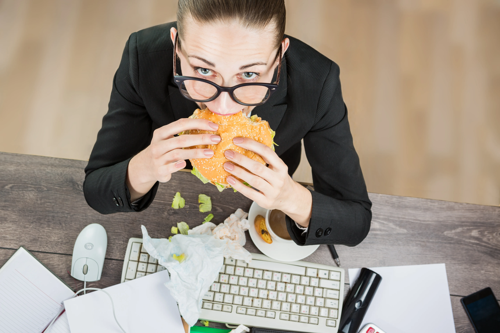

Интуитивное питание для занятых людей: как восстановить связь с сигналами голода
10 практических шагов, советы по планированию питания и техники для распознавания сигналов голода в напряженном ритме жизни.